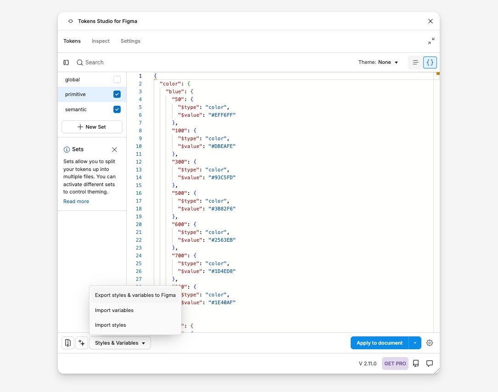
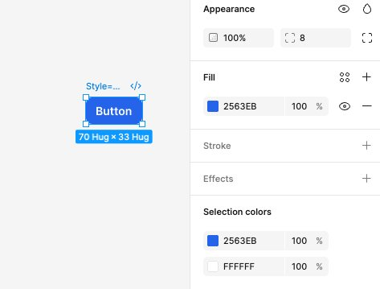
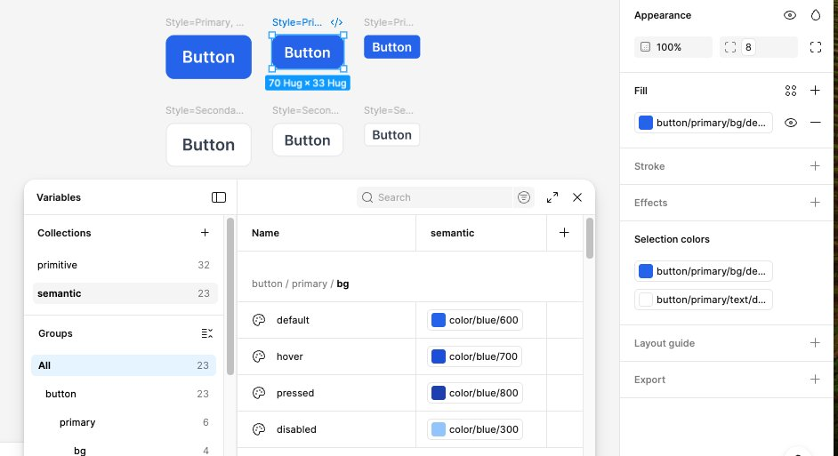
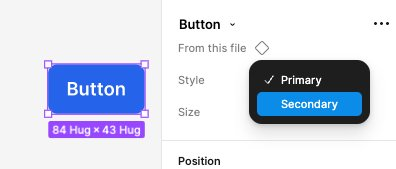

How to import design tokens into Figma and make Claude Code build button components that use them as real, bound variables. No more hardcoded hex values.
They Said 'Now Try It With Real Tokens.' So I Did. And Failed. And Got It Working.
So remember my last guide? The one where I got Claude Code to build button components in Figma? That was fun. That worked. But the buttons used hardcoded hex colors. Just #2563EB sitting there, raw, not connected to anything. Like painting a house by hand when you could be using a paint sprayer connected to a color system.
That bothered me. Because in a real design system, you don't hardcode colors. You use tokens. Variables. Semantic names like button/primary/bg/default that point to a primitive like color/blue/600. Change the primitive once, and every button, card, and link that references it updates automatically. Light mode, dark mode, rebrand, whatever.
So I thought: what if I import my design tokens into Figma first, and THEN ask Claude Code to build buttons that actually use those tokens?
Spoiler: it works. But not the way I expected. And I made approximately seven mistakes getting there. Let me save you the pain.
The honest answer first
Before we start, let me tell you what I found so you can decide if this is worth your time:
Can Claude Code read your Figma variables? Sort of. The MCP bridge has get_styles which sees styles, but it can't directly read Figma variables. You work around this by just telling Claude what tokens you have.
Can Claude Code create buttons? Yes. Frames, fills, text, auto-layout. This part works great.
Can Claude Code bind variables to buttons? Nope. The MCP bridge doesn't have tools for variable binding. Claude told me this directly after I spent way too long trying to make it happen. I asked nicely. I asked firmly. I rephrased the prompt four different ways. Claude finally just said: "I don't have that tool." Respect the honesty.
So how do we bind variables? Two-pass approach. Claude builds the buttons with hardcoded colors (pass 1), then Claude writes you a separate Figma plugin that binds the variables (pass 2). You import that plugin into Figma and run it. Takes 30 seconds. It works.
What you need before starting:
✓ Completed my first guide (Claude Code + MCP + Figma already working)
✓ Paid Figma plan (variables require Figma Professional or higher)
✓ Paid Claude plan (Claude Code uses API credits)
✓ Your design tokens in a JSON file (I'll show you a starter one)
✓ Token Studio plugin installed in Figma (free version is fine)
✓ Patience. Lots of it.
0 / 11
Part 1: Set up your design tokens
First, we need tokens in Figma. If you already have variables imported, skip to Part 2.
Prepare your design tokens JSON
In a real design system, tokens come in two layers. This is how most teams and tools (Material Design, Spectrum, Carbon and more) recommend structuring them:
Primitive tokens = the raw ingredients. Actual hex colors, pixel values, font sizes. These are your palette. They don't tell you what they're used for.
Semantic tokens = what the value is FOR. They reference a primitive by name. So instead of #2563EB, you say {color.blue.600}. This way, if you rebrand and change your blue, you update ONE primitive and everything downstream updates.
We're going to create both. Two JSON files.
File 1: primitive.json
Save this as primitive.json on your Desktop. These are your raw values.
💡 See the {color.blue.600} references? That's the magic. Semantic tokens don't hold actual values. They point to primitives. So if you rebrand from blue to purple, you change ONE primitive file, and every button, card, link, and icon that references it updates automatically.
💡Why two files? In Token Studio, each JSON file becomes a "token set." You enable both sets, and the plugin resolves the references. The primitive set has the raw values, the semantic set has the aliases. This is how teams at Shopify, GitHub, Atlassian, and most design systems in the real world structure their tokens.
⚠Important: Token Studio needs BOTH sets active for the references to resolve. If you only import semantic.json without primitive.json, the {color.blue.600} references will break because there's nothing to point to.
Install Token Studio in Figma
Open Figma Desktop. Go to the Community tab (the little people icon on the left sidebar). Search for "Tokens Studio for Figma". Click Install. That's it.
If you already have it installed, make sure it's updated. Old versions sometimes have issues importing JSON.
💡 Token Studio is the bridge between your JSON tokens and Figma's native variables. It reads your JSON, creates Figma variables from it, and keeps them in sync. The free version handles everything we need here.
Import your JSON tokens into Figma
Open a Figma file (create a new one if you want a clean slate). Then:
Open Token Studio: Right-click on the canvas, or go to Menu → Plugins → Tokens Studio for Figma.
Start a new project: If it asks, choose "New empty file."
Create the primitive token set: In Token Studio, you'll see a sidebar on the left with token sets. Click the + icon to create a new set. Name it primitive. Switch to JSON view (toggle at top right), delete the default content, and paste your primitive.json content.
Create the semantic token set: Click + again to create another set. Name it semantic. Switch to JSON view, and paste your semantic.json content.
Enable BOTH sets: In the left sidebar, make sure both primitive and semantic have their checkboxes checked (active). The semantic tokens need the primitives to resolve their {references}. If you only enable one, the references will show as broken.
Push to Figma: Click the "Styles & Variables" button at the bottom of the Token Studio panel. Select "Export variables." Choose "Create new variables" and confirm.

Now open Figma's native Variables panel (click the grid icon in the right sidebar, or go to the local variables panel). You should see your tokens there as Figma variables.
✓How to verify it worked: Open the Variables panel in Figma. You should see collections with your primitive values (like color/blue/600 = #2563EB) AND your semantic values (like button/primary/bg/default which aliases to color/blue/600). The semantic ones should show a little chain-link icon meaning they reference another variable.
⚠Common issue: If semantic tokens show raw hex values instead of references, it means Token Studio exported them as resolved values instead of aliases. That still works for our purpose (Claude can read and bind them either way), but you lose the "change one primitive, update everything" magic. To fix this, make sure both token sets are enabled before exporting.
⚠Another common issue: Token Studio might group all tokens into one variable collection. Or it might create separate collections per token set. Both are fine. What matters is that the variables exist and have correct values.
Part 2: Connect Claude to Figma
Same setup as the first guide. If you've done this before, it's just the 3-window dance: socket server, Figma plugin, Claude Code.
Make sure your MCP bridge is running
This assumes you completed my first guide. You need three things running:
Terminal 1 (the socket server):
start the websocketcd ~/cursor-talk-to-figma-mcp && bun run src/socket.ts
Should say: WebSocket server running on port 3055
Figma Plugin (the MCP bridge): Open your Figma file. Run the "Talk to Figma MCP" plugin from the Plugins menu. It should show "Connected" with a green dot and a Channel ID.
Terminal 2 (Claude Code): Open a new Terminal window.
start claude codeclaude
Then tell Claude to join the channel:
connect to figmaTalk to Figma, join channel [paste-your-channel-ID-here]
⚠Remember: Terminal 1 = the socket. Don't touch it. Terminal 2 = where you talk to Claude. The Figma plugin window must stay open. Close any of these three and the connection breaks.
Part 3: Build a test button
Here's where it gets interesting. We're going to build ONE button first, bind its variables, verify the whole pipeline works, and THEN build the rest. Trust the process.
Build ONE test button with Claude
Now here's where it gets real. You're going to ask Claude Code to build ONE button. Not all 6. Just one. Because if something breaks (and something always breaks), you want to know exactly where.
Here's what I learned the hard way: don't ask Claude to bind variables in this step. The MCP bridge can't do it. It can create shapes, set colors, add text, but it cannot bind Figma variables to nodes. I tried. I begged. Claude said no. So we're doing this in two passes.
Paste this into Claude Code (Terminal 2):
the test button promptCreate ONE test button in Figma with these specs:
- It's a frame with auto-layout containing a text label that says "Button"
- Fill color: #2563EB (blue)
- Text color: #FFFFFF (white)
- Font weight: 600 (semibold)
- Horizontal padding: 12, vertical padding: 8
- Corner radius: 8
- Font size: 14
Name the frame exactly: Style=Primary, Size=Medium
Just this one button. Nothing else yet.
Claude will start creating elements on your Figma canvas. You'll see the MCP plugin logging commands in its panel. Let it cook.
Once it's done, check the canvas. You should see one blue button with white text. Click on it and verify in the right sidebar: auto-layout is on, fill is #2563EB, it's named Style=Primary, Size=Medium in the layers panel.

💡 Notice the hex values I used (#2563EB, #FFFFFF, etc.) match our primitive tokens exactly. This is intentional. The binding script in the next step will match these hex values to the corresponding Figma variables.
Ask Claude to write the binding plugin
Click the button you just created. Look at the Fill section in the right sidebar. See that 2563EB with a blue square? That's a raw hex value. No variable icon. No token name. Just a color sitting there, disconnected from your token system. We're about to fix that.
Since the MCP bridge can't bind variables, we need a Figma plugin that can. The good news: Claude Code can write one for us. The bad news: Claude's code will probably have a typo. (Mine did. Missing parenthesis. Classic.)
Paste this into Claude Code:
ask claude for the binding pluginThe button is created but the fill is a hardcoded hex value, not bound to a Figma variable. The MCP bridge doesn't support variable binding.
Write me TWO FILES for a standalone Figma plugin that I can import and run:
File 1: manifest.json (name it "Bind Variables", Figma plugin API version "1.0.0")
File 2: code.js that does the following:
1. Gets all local variables using figma.variables.getLocalVariablesAsync()
2. Finds ALL frame nodes on the current page whose names start with "Style="
3. For Primary buttons (name contains "Style=Primary"): binds button/primary/bg/default to fills, binds button/primary/text/default to the text label fills
4. For Secondary buttons (name contains "Style=Secondary"): binds button/secondary/bg/default to fills, binds button/secondary/border/default to strokes, binds button/secondary/text/default to text label fills
5. For Small buttons: binds button/padding/sm/horizontal to paddingLeft+paddingRight, button/padding/sm/vertical to paddingTop+paddingBottom, button/radius/sm to all corner radii
6. For Medium buttons: binds button/padding/md/horizontal, button/padding/md/vertical, button/radius/md
7. For Large buttons: binds button/padding/lg/horizontal, button/padding/lg/vertical, button/radius/lg
8. Uses setBoundVariableForPaint() for color bindings and setBoundVariable() for spacing/radius
9. Logs every binding it makes
10. IMPORTANT: Find buttons by searching the page for nodes whose names match, NOT by hardcoded node IDs. This way I can re-run the plugin after adding more buttons.
Put both files in ~/figma-bind-variables/
Claude will create the files. But before you run them...
⚠Check for typos. When Claude wrote my binding script, it had a syntax error: console.warn`Node not found: ${name}`) was missing an opening parenthesis. Should be console.warn(`Node not found: ${name}`). Ask Claude to double-check the script before you run it.
💡 Verify the files were created. In Claude Code, type: ls ~/figma-bind-variables/ and you should see manifest.json and code.js.
💡Key detail: The prompt says "find buttons by searching the page, NOT by hardcoded node IDs." This is important. If we hardcode node IDs, we'd need to update the script every time we add new buttons. By searching for nodes named Style=Primary... or Style=Secondary..., the plugin will find and bind ALL buttons, even ones we create later.
Import and run the binding plugin
Now we import Claude's binding script as a separate Figma plugin. This keeps your MCP plugin untouched.
In Figma:
1. Go to Plugins > Development > Import plugin from manifest...
2. A file picker opens. Press Cmd+Shift+G
3. Type: ~/figma-bind-variables
4. Select manifest.json and click Open
5. Now go to Plugins > Development > Bind Variables and click to Run
The plugin will find your test button, match the Figma variables by name, and bind them. You should see "Bind Variables has been imported" at the bottom of Figma when it finishes.
⚠Don't use the browser DevTools console. I made this mistake. If you right-click and "Inspect" in Figma, that opens Chrome DevTools, which CANNOT run figma.variables commands. You need the Figma Plugin system, not the browser console. That's why we're creating a separate plugin instead of pasting into a console.
⚠Don't replace your MCP plugin's code.js. I also made this mistake. I deleted the MCP plugin's code.js trying to paste the binding script into it. Then I had to restore it with git checkout. Keep the two plugins separate. MCP plugin = talks to Claude. Bind Variables plugin = binds your tokens. Two different jobs, two different plugins.
Verify the binding worked on the test button
Click on your test button. Look at the Fill section in the right sidebar. Instead of 2563EB you should now see button/primary/bg/de... with a little diamond icon next to it.
Check the Selection colors section at the bottom of the sidebar too. It should show variable names like button/primary/bg/de... and button/primary/text/d... instead of raw hex values.
If you see variable names with diamond icons: the pipeline works. Time to build the rest.
If you still see raw hex values: the binding script didn't match the variable names correctly. Go back to Claude Code and ask: "The binding didn't work. Can you read the code.js file you wrote and check if the variable names match what's in my Figma file? The variables are named like button/primary/bg/default, button/primary/text/default, etc."
✓The moment you see that diamond icon, you know the whole pipeline works: Token JSON → Token Studio → Figma Variables → Claude builds button → Binding plugin connects them. Now we can confidently build the rest.
Part 4: Build the rest
The pipeline works. Time to go full production. Build the remaining 5 buttons, re-bind everything, and create the component set.
Build the remaining 5 buttons
Now that we know the pipeline works, it's time to build the rest. You'll need to reconnect Claude Code to Figma first, because running the binding plugin may have disrupted the MCP connection.
Reconnect if needed
Check if Claude Code is still connected. Type something simple like "Can you get the document info?" If it times out or errors, you need to reconnect:
1. Check Terminal 1 (the socket server). If it crashed, restart it: cd ~/cursor-talk-to-figma-mcp && bun run src/socket.ts
2. In Figma, re-run the Cursor MCP Plugin from Plugins > Development. Copy the new Channel ID.
3. In Claude Code, join the new channel: Talk to Figma, join channel [new-channel-ID]
Build the remaining buttons
Once connected, paste this:
build the remaining 5 buttonsCreate 5 more buttons in Figma using the same approach as the first one. Here are the specs:
BUTTONS TO CREATE:
1. Style=Primary, Size=Small — fill #2563EB, text #FFFFFF, padding 8/4, radius 4, font 12
2. Style=Primary, Size=Large — fill #2563EB, text #FFFFFF, padding 16/12, radius 8, font 16
3. Style=Secondary, Size=Small — fill #FFFFFF, stroke #E5E7EB 1px, text #374151, padding 8/4, radius 4, font 12
4. Style=Secondary, Size=Medium — fill #FFFFFF, stroke #E5E7EB 1px, text #374151, padding 12/8, radius 8, font 14
5. Style=Secondary, Size=Large — fill #FFFFFF, stroke #E5E7EB 1px, text #374151, padding 16/12, radius 8, font 16
All buttons should have:
- Auto-layout with the specified padding
- Text label "Button" with font weight 600
- Frame name exactly as shown (Style=X, Size=Y)
Space them 20px apart from each other and from the existing button.
This will take a few minutes. Each button needs multiple MCP commands (create frame, set auto-layout, add text, set fill, rename). Don't interrupt Claude while it's working.
⚠Figma might lag. Creating elements programmatically while the plugin is running can make Figma sluggish. Don't force-quit. Just wait. If it freezes for more than 30 seconds, the WebSocket connection might have dropped. Check Terminal 1.
Re-run the binding plugin for all buttons
You now have 6 buttons on the canvas, but only the first test button has its variables bound. The other 5 still have hardcoded hex values. Time to fix that.
In Figma, go to Plugins > Development > Bind Variables and Run it again.
Because we wrote the binding script to search for nodes by name (anything starting with Style=) instead of hardcoded node IDs, it will find and bind ALL 6 buttons, including the new ones. The first button will get re-bound (harmless), and the 5 new buttons will get their variables for the first time.
After it runs, click on a few different buttons and check the Fill section. Every button should now show variable names with diamond icons instead of hex values:
Primary buttons: Fill shows button/primary/bg/de..., text shows button/primary/text/d...
Secondary buttons: Fill shows button/secondary/bg/de..., stroke shows button/secondary/border/de..., text shows button/secondary/text/d...

✓All 6 buttons bound to variables? You're almost done. One more step.
💡 This is why we wrote the plugin to search by name instead of node IDs. You can keep adding buttons with Claude and re-running this plugin as many times as you want. It's reusable.
Create the component set (manual)
The MCP plugin can't create component sets. This part you do yourself.
Select each individual button. Not the group. Not the parent frame. Each individual button frame. Hold Cmd and click each one, or use Cmd+A if they're the only things on the canvas.
Right-click and select "Create component set".
Because Claude named them using the Style=Primary, Size=Medium convention, Figma will automatically parse those into variant properties. You should see "Style" and "Size" as properties in the right sidebar.

After creating the component set, click on any button variant and check the Fill section one more time. The variable binding should still be there. Sometimes creating a component set can break bindings, so double-check.
If bindings are intact: you now have a button component system with real Figma variables, built using two-layer design tokens (primitive + semantic), with Claude Code doing the heavy lifting.
That's a real design system workflow. Not a tutorial exercise. An actual production-ready approach.
💡If Figma says "can't create component set": You probably selected a group or frame containing the buttons instead of the individual buttons themselves. Click away to deselect, then hold Cmd and click each button one by one.
🎉 You actually did it. Again.
Button components with real Figma variables, built with AI assistance.
Two-layer tokens. Semantic references. Variable bindings. The whole thing.
We went from "hardcoded hex values" to "actual design system workflow."
That's growth. That's character development. That's main character energy.
A brief and humiliating recap of my continued suffering, so you don't repeat my mistakes.
🤡 "The MCP bridge can't do that"
I spent an embarrassing amount of time trying to get Claude Code to bind variables through the MCP bridge. Different prompts. Different wordings. "Use setBoundVariable." "Use execute_figma_code." "Please?" Finally Claude just leveled with me: "The TalkToFigma MCP server I'm connected to doesn't have an execute_figma_code tool." It only has specific tools like create_frame, set_fill_color, etc. None of them support variable binding. So the two-pass approach isn't a fallback. It's THE approach. I just didn't want to accept it.
🤡 I opened the wrong console
Claude said "paste the script into the console." So I right-clicked in Figma, clicked "Inspect," and pasted the script into Chrome DevTools. Red errors everywhere. Spent 10 minutes debugging. Turns out the browser console doesn't have access to figma.variables. That's the Figma Plugin API, not a browser API. Completely different thing. The fix: don't use the browser console at all. Create a proper Figma plugin with manifest.json + code.js and import it. Ask me how I know.
🤡 I deleted the MCP plugin's code.js
In a moment of galaxy-brain thinking, I decided to "just paste the binding script into the existing plugin." So I deleted the MCP plugin's code.js. Then the MCP bridge stopped working entirely. Claude couldn't talk to Figma anymore. Panic. Fixed it with cd ~/cursor-talk-to-figma-mcp && git checkout src/cursor_mcp_plugin/code.js. Lesson learned: two plugins, two jobs. Don't touch the MCP plugin files. Ever.
🤡 Claude's script had a typo
The binding script Claude wrote had console.warn`Node not found`) instead of console.warn(`Node not found`). Missing opening parenthesis. One character. Would have crashed the whole script. AI writes code with typos just like the rest of us. Always ask Claude to double-check, or read through it yourself before running.
🤡 MCP timeouts after running the binding plugin
After I ran the Bind Variables plugin, the MCP bridge started throwing "Request to Figma timed out" errors. I think running two plugins at the same time confused the WebSocket. Not a big deal since the binding was already done, but if you need to go back to Claude Code after binding, restart the socket server and rejoin the channel. It's the "turn it off and on again" of this whole setup.
The real workflow
Here's what actually happens. No sugarcoating. No "AI does everything while you sip coffee." It's a partnership.
Step
Who does it
What happens
1
You
Write two JSON files (primitive colors + semantic token names)
2
Token Studio plugin
Reads your JSON and creates Figma variables from them
3
You
Connect Claude Code to Figma (socket server + plugin + terminal)
4
Claude Code
Create any component sets on your Figma canvas with the right colors, padding, and names
5
Claude Code
Writes a small Figma plugin that connects your buttons to the token variables
6
You
Import that plugin into Figma and run it (30 seconds)
7
You
Select all buttons, right-click, "Create component set." Done.
It's not fully automatic. Claude handles the repetitive creation work. You handle the parts that require Figma plugin access and manual component setup. Together it's faster than doing either fully by hand or fully by AI. And honestly? Watching Claude create buttons while you eat snacks is still pretty satisfying.
What's next
So we got buttons working with tokens. Cool. But a real design system has way more than buttons. I'm curious about what happens when you push this further.
Like, what if your tokens have a light mode and a dark mode? Can Claude build components that automatically switch colors when you flip between modes? The Figma side supports this (it's called "variable modes"), but can Claude actually handle it through the MCP bridge? I don't know yet.
Or what about syncing tokens from a shared file? Right now we're copy-pasting JSON by hand. But Token Studio can connect to a GitHub repo, which means your tokens could live in one place and automatically update in Figma whenever someone changes them. No more manual importing. That sounds amazing in theory. I want to see if it actually works in practice.
And the big one: can this scale beyond buttons? Cards, inputs, navigation bars, modals, all with token bindings. I have a feeling the binding plugin approach will work for any component, but I haven't tested it yet.
Stay tuned for the next noob failure reflection. 🫡